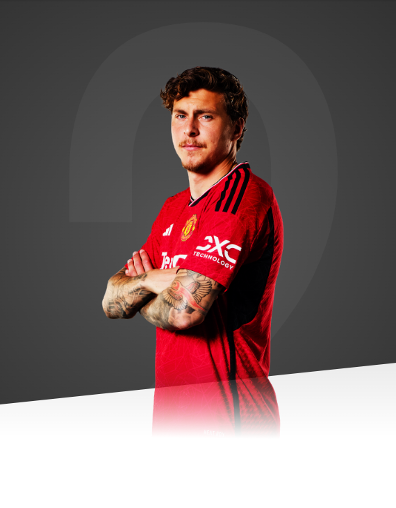

United are one of the biggest clubs in the world and always want to win titles. That's also my goal.

AGE
29
APPEARANCES
241
CLEAN SHEETS
3
BIOGRAPHY
Dealing with pressure is something that appears to come naturally to unflappable Swedish defender, Victor Lindelof.
In June 2015, he scored in the penalty shoot-out in the European Under-21 Championship final to help earn his country a notable first international triumph.
Lindelof had only been introduced to the squad as a late call-up but performed with distinction at right-back, earning a place in UEFA's Team of the Tournament. It helped provide added impetus to his club career as he forced his way into the senior Benfica side and enjoyed experience in the domestic top flight and Champions League.
Patience has been important for the Scandinavian, who burst into Vasteras' first team when only 16 years old. He helped his local side gain promotion but left when Benfica came calling in 2012. The Lisbon giants had seen his potential in Sweden's Under-16s and Under-17s and made their move.
Still only 17, Lindelof understandably had to wait for an opportunity and cut his teeth with the B team, before emerging as one of Europe' s most exciting young defenders with the senior side.
Winning trophies became something of a habit during his time in Portugal, as he collected three league titles, two Portuguese Cups, one League Cup and one Super Cup. This being in addition to his European Under-21 Championship medal, of course.
In 2017, the composed centre-back signed a four-year deal at United, with the option of a further year. The defender ended his maiden campaign in England with 29 appearances and a number of impressive performances towards the end of the season, including a Man-of-the-Match display against Arsenal in April.
After reaching the quarter-finals of the 2018 World Cup with Sweden, he continued his development in the 2018/19 season, maintaining a consistent level of form that endeared him to the Old Trafford faithful. Lindelof's fine performances saw him named the club's Player of the Month for November - when he was also named Sweden's Player of the Year at an awards ceremony in Stockholm.
Two months later, he scored his first goal in a red shirt, netting a late equaliser against Burnley. A groin injury hampered his progress in the final weeks of the season, but Victor still emerged as one of the biggest plusses of the campaign. He came a close second, behind Luke Shaw, in the votes for the Players' Player of the Year and Sir Matt Busby Player of the Year awards respectively.
In the 2019/20 campaign, the Swede featured in 35 Premier League matches, forming a solid partnership with United skipper Harry Maguire in a season where United finished third in the table and thereby qualified for the Champions League. In December 2019, he scored his second goal for the club in a 2-2 draw with Aston Villa at Old Trafford and he was a regular presence the following season, as the Reds came second and made it to the Europa League final.
Lindelof's stature grew even further in the 2021/22 season, as became a trusted partner for both Harry Maguire and Raphael Varane. The Swede regularly demonstrated his composure on the ball and coupled that with stern defensive resilience to become a valuable asset for Ole Gunnar Solskjaer and interim manager Ralf Rangnick.
Our Swedish centre-back made 35 appearances in all competitions in 2021/22, producing impressive performances away from home against the likes of Villareal and Spurs. He even started at right-back when we visited Atletico Madrid in the Champions League, and showed his versatility by putting in a competent display.
Lindelof played 35 times in 2022/23 too, with 20 of those coming in the Premier League. In the latter part of the season, Victor started United's final nine Premier League fixtures as the Reds confirmed Champions League qualification. Performances against the likes of Aston Villa and Chelsea stood out.